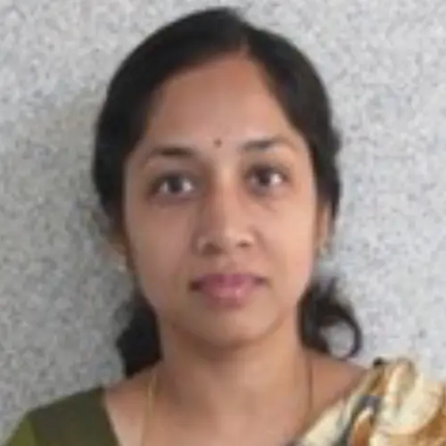

India member
Dr. Pushpa Tuppad
Name: Dr. Pushpa Tuppad Highest qualification and awarding university PhD, Kansas State University, Manhattan, Kansas, USA Designation Associate Professor Employer JSS Science and Technology University, Mysuru Contact details: Email: WhatsApp number/Mobile number ptuppad@jssst…
Published 5 July 2022 · Updated 7 April 2025

| Name: | Dr. Pushpa Tuppad |
| Highest qualification and awarding university | PhD, Kansas State University, Manhattan, Kansas, USA |
| Designation | Associate Professor |
| Employer | JSS Science and Technology University, Mysuru |
Contact details:
|
|
| ptuppad@jssstuniv.in ptuppad@gmail.com | |
| +91 9591083451 | |
| Home page link on your employer web site if available | https://jssstuniv.in/ |
| Key areas of interest | Hydrology and water quality modelling, Remote sensing and GIS applications in water resource management |
| Web links for your research profile on Google scholar; ORCID or Research Gate (if available); only one of them please. | https://scholar.google.co.in/citations?user=PQTiLZAAAAAJ&hl=en |
Dr. Pushpa Tuppad is an associate professor in the Department of Environmental Engineering at JSS Science and Technology University, Mysuru. She has 18 years of teaching and research experience in hydrology, watershed management, applications of remote sensing and GIS in natural resources management, and various domains of environmental engineering. She has supervised 19 M. Tech. dissertation work and has PhD scholars working under her supervision on NPS pollution modelling in Cauvery river basin in Karnataka, unaccounted-for-water in distribution system, and drought monitoring using geospatial technologies. She is a Co-PI on DST funded project (37.5 lakhs) on biological nutrient removal from wastewater for reduced land and energy footprints. She has published 22 peer reviewed journal articles, over 10 in conference proceedings, and co-authored two book chapters; 855 citations as of September 2020. She is a life member of Institution of Engineers (India), Indian Water Works Association, and Indian Society of Agricultural Engineers, and member of ‘International Association for Water, Environment, Energy and Society’.
Research Project
Dr. B. Manoj Kumar (PI), Dr. PuspaTuppad (Co-PI), Rohini (Collaborator – CDD)), ”Biological nutrient removal from wastewater in modified DEWATS system for reduced land and energy footprint”, approved by Department and Science and Technology under Water Technology Initiative. DST funding: Rs. 35 lakhs; Collaborator: Rs. 12 lakhs.
Key Publications/Reports
- Prajnya V. H., Pushpa Tuppad. 2016. Study of Hydrologic Response of Kabini Basin Using Soil and Water Assessment Tool (SWAT). International Journal of Engineering Science and Computing, 6(8): 2373-2380.
- Lee. T, Xiuying Wang, Michael White, Pushpa Tuppad, Raghavan Srinivasan, Balaji Narasimhan, and Darrel Andrews. 2015. Modeling Water-Quality Loads to the Reservoirs of the Upper Trinity River Basin, Texas, USA. Water, 7, 5689-5704; doi:10.3390/w7105689.
- Deb, D.; Tuppad, P.; Daggupati, P.; Srinivasan, R.; Varma, D. 2015. Spatio-Temporal Impacts of Biofuel Production and Climate Variability on Water Quantity and Quality in Upper Mississippi River Basin. Water, 7: 3283-3305.
- T. Johnson, J. Butcher, D. Deb, M. Faizullabhoy, P. Hummel, J. Kittle, S. McGinnis, L.O. Mearns, D. Nover, A. Parker, S. Sarkar, R. Srinivasan, P. Tuppad, M. Warren, C. Weaver, and J. Witt. 2015. Streamflow and Water Quality Sensitivity to Climate Change and Urban Development in 20 U.S. Watersheds. Journal of the American Water Resources Association (JAWRA) 1-21. DOI: 10.1111/1752-1688.12308..
- Renukumar K. S., Pushpa Tuppad. 2014. Water Audit in Distribution Network by Establishng District Metered Area (DMA) – A Necessity in Assessing Real Losses Component of Non-revenue Water (NRW). International Journal of Civil Engineering and Technology, 5(9): 01-08.
- Tuppad, P., K. R. Douglas-Mankin, T. Lee, R. Srinivasan, and J. G. Arnold. 2011. Soil and water assessment tool (SWAT) Hydrologic/Water Quality model: Extended capabilities and wider adoption. Transactions of the ASABE 54(5): 1677-1684.
- Pushpa Tuppad, Narayanan Kannan, Raghavan Srinivasan, Colleen G. Rossi, and Jeffery G. Arnold. 2010. Simulation of agricultural management alternatives for watershed protection. Water Resources Management, 24(12): 3115-3144; DOI 10.1007/s11269-010-9598-8.